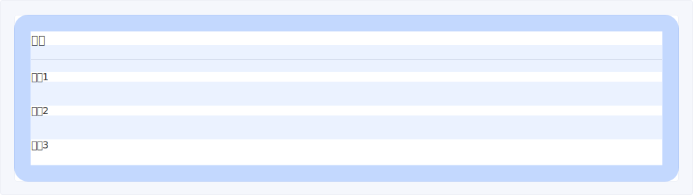
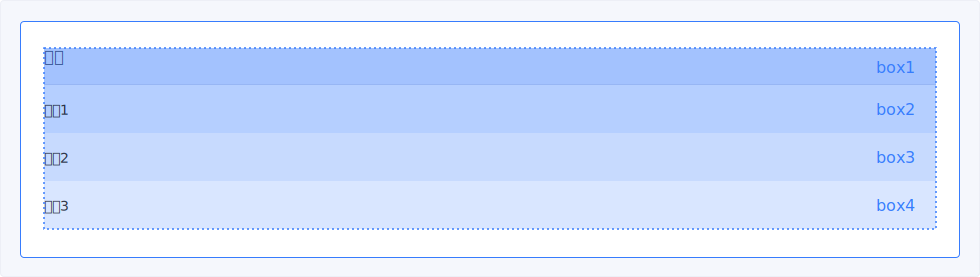
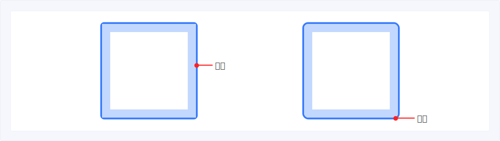
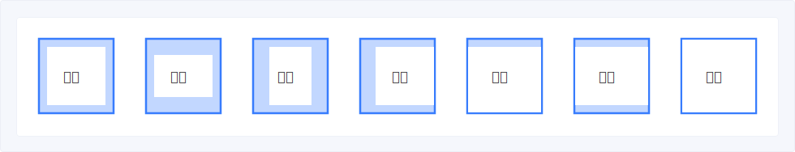
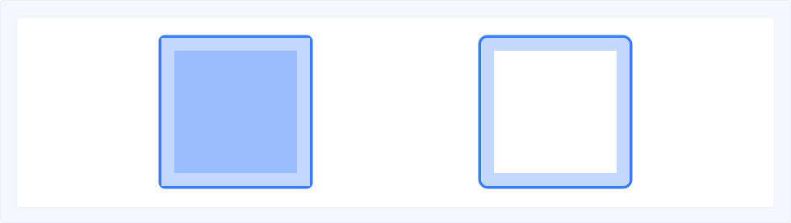
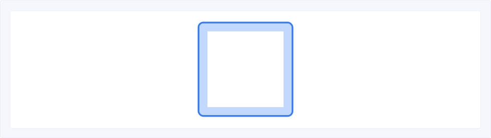
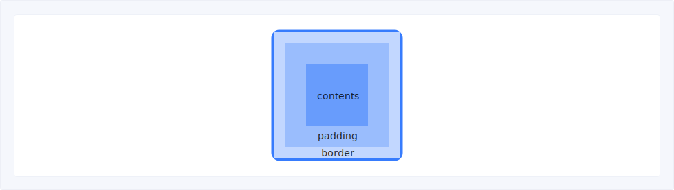
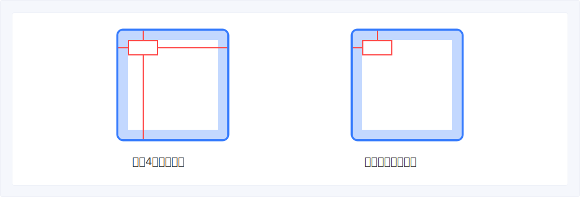
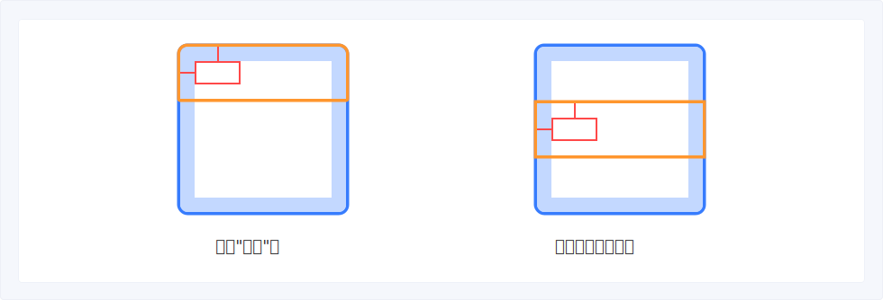

页面构成
盒子是所有页面的组成部分，页面通过盒子的嵌套和覆盖两种形式搭建而成，盒子可以帮助开发和设计师做到一致的解读页面，降低沟通和技术实现成本。盒子的设计需要满足以下原则：
- 一个页面完全由盒子构成，盒子与盒子之间可理解为空白盒子（间距）；
- 盒子与盒子之间存在嵌套、覆盖两种排布形式；
- 所有的盒子都相对于某个盒子而确定其位置，默认对齐于左上，非左上的位置需要特殊说明。
- 其中覆盖的盒子必须基于另一个被覆盖盒子进行定位
“盒子"的目的
在通过标注程序／线上搭建等工程方式完成设计到前端低成本转化之前，前端和设计师必须做到一致的解读一个页面。这样可以降低设计到工程转化的成本。
设计师理解的页面由内容和间距构成

开发理解的页面由盒子构成

“容器”的属性
一个“容器”由Border&Corner（边线和圆角）、Padding（内边距）、Background（背景）、Shadow（投影）、Content（内容）Size（尺寸）构成。
边线和圆角（Border&Corner）
边线：有颜色/样式/宽度 圆角：可设置幅度（4px）

内边距（Padding）
内容不能输入的禁止区域，Padding的4个边可以设置为不同的数值，建议设置为8及8n

背景（Background）
容器可以有背景色也可以为透明的

投影
颜色通常为#000000，n%不透明度，特殊投影会特殊标明

内容
内容区可以嵌套其他“容器”

尺寸（Size）
“容器”没有限制 Height 和 Width 时将随着内容逐渐撑大;
“容器”设置了 Height 和 Width 内容过多后将被隐藏，或通过下拉预览
“容器”与“容器”的排布
1.“容器”嵌套“容器”，“容器”与“容器”不可重叠
A.依据布局排列，通过占比分布 B.依据排版排列有一定的排版规则，比如Q从左至右，由上到下
2.“容器”覆盖于某一个“容器”之上
盒子基于另一个盒子覆盖并“固定”，其位置由其与另一个盒子的边缘之间的距离确定，脱离盒子则距离为负数。
A.一个盒子最多可以由4根牵引绳固定 B.最少可以由2条牵引绳固定

3.定位（pin）的形式
A.在某个盒子之上定位 B.在Web视框之上定位
